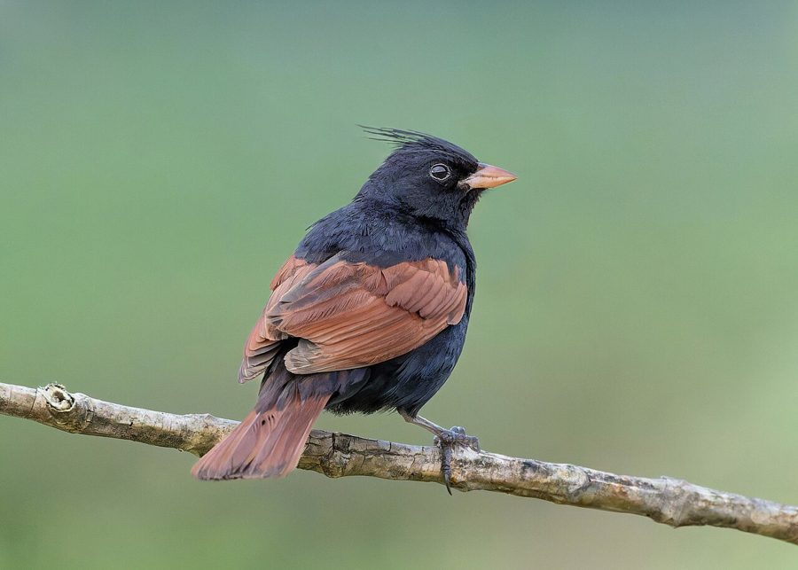

कलगीदार गौरैयाCrested Bunting
Emberiza lathami · Emberizidae · BRD-0275

- Scientific name वैज्ञानिक नाम
- Emberiza lathami J.E.Gray, 1831
- Family कुल
- Emberizidae
- Hindi हिंदी
- कलगीदार गौरैया
- Local names स्थानीय नाम
- crested bunting, chotidar bunting, kalgi gauraiya
- Status here यहाँ की स्थिति
- native
- Movement आवागमन
- Resident, here all year
- Known from कहाँ दर्ज
- Others have published records from the Basti–Ayodhya districts बस्ती–अयोध्या के ज़िलों से दूसरों के प्रकाशित अभिलेख
- IUCN IUCN
- not evaluated
- Review समीक्षा
- not yet reviewed
When to look कब देखें
Present all year. साल भर मौजूद।
Tell it apart from इनसे अलग पहचानें
कलगीदार गौरैया / Crested Bunting
Emberiza lathami J.E.Gray, 1831 — Emberizidae
कलगीदार गौरैया — सूखे पथरीले मैदानों, बीहड़ों और रेलवे तटबंधों पर पाई जाने वाली विशिष्ट बंटिक, जिसके सिर पर नुकीली कलगी होती है और नर में काले शरीर के साथ गहरे कत्थई-लाल पंख होते हैं।
Quick Identification त्वरित पहचान
| Feature | Description |
|---|---|
| Crest | Prominent, slender, erect pointed crest on the crown in both sexes |
| Male coloration | Slaty-black body contrasting strikingly with deep rich chestnut-rufous wings and tail |
| Female coloration | Dull olive-brown with dark streaking, smaller crest, and chestnut wash on wings |
| Bill shape | Stout conical granivorous finch-like bill with pale lower mandible |
| Terrestrial habit | Hops actively on bare rocky soil, flying to exposed perches with a jerky flight |
Distinctive bunting characterized by a conspicuous upright pointed crest. The adult male has a glossy slaty-black body that contrasts vividly with rich chestnut-rufous wings and tail. The female is olive-brown with fine dark shaft-streaks, a shorter but evident crest, and rufous-cinnamon fringes on the wings. Both sexes possess a conical finch-like bill and spend considerable time foraging on dry ground.
हिंदी: सिर पर नुकीली खड़ी कलगी वाला पक्षी। नर का पूरा शरीर काला और पंख तथा पूंछ गहरे कत्थई-लाल होते हैं; मादा मटमैली भूरी होती है जिस पर हल्की लकीरें होती हैं।
Morphology शारीरिक संरचना
| Feature | Description | Source |
|---|---|---|
| Male body | Glossy slaty-black head, neck, mantle, breast, and belly | Grimmett et al. (2011) |
| Male wings | Deep rich chestnut-cinnamon flight feathers and upperwing coverts | Rasmussen & Anderton (2012) |
| Female plumage | Dull olive-brown above with dusky streaks and warm rufous wing wash | Rasmussen & Anderton (2012) |
The adult male in breeding dress has an entirely deep slaty-black head, neck, breast, belly, mantle, and back. A long, slender crest of pointed feathers rises vertically from the center of the crown. The primaries, secondaries, and tail feathers are rich deep rufous-chestnut, narrowly edged with black. The bill is stout, conical, and horn-brown, paler at the base. Legs are fleshy-brown; iris dark brown. The female is dark olive-brown above, streaked with blackish shaft-lines on the mantle, with warm buffy-grey underparts faintly streaked on the breast and flanks. Her crest is shorter than the male's, and her wings and tail exhibit a duller cinnamon-chestnut hue.
Vocalisations. The territorial song of the male, delivered from an exposed boulder or top of a thorny bush, is a cheerful, lively musical jingle rendered as tsee-tsee-tsip-tsip-tsee or whit-whit-whee-tseee. In flight, it emits a thin metallic clicking call tsip or chick.
हिंदी: नर पक्षी का शरीर चमकदार काला और पंख गहरे कत्थई होते हैं। सिर पर पतली नुकीली चोटी होती है। मादा मटमैली भूरी होती है। चोंच बीज तोड़ने के लिए मजबूत और शंक्वाकार होती है।
Behaviour & Ecology व्यवहार एवं पारिस्थितिकी
Essentially a ground-foraging bird that inhabits open, dry, and rocky terrain. It walks and hops with a deliberate gait over stony ground, gravelly tracks, and dried riverbanks, searching for fallen seeds. When disturbed, it flies up rapidly with an undulating, jerky wing action to alight on an elevated rock pinnacle, boulder, or telegraph wire, immediately raising its crest while scanning the surroundings. During non-breeding months, birds often form small loose parties of 4 to 10 individuals, sometimes associating with pipits and larks in arid fallow land.
हिंदी: यह जमीन पर चलने वाला पक्षी है जो कंकड़-पत्थरों और पगडंडियों पर बीज तलाशता है। खतरा महसूस होने पर यह उड़कर किसी ऊंचे पत्थर या तार पर बैठ जाता है और कलगी खड़ी कर लेता है।
Life Cycle / Phenology जीवन चक्र एवं फेनोलॉजी
The breeding season takes place between May and August, coinciding with the hot pre-monsoon dry period and initial monsoon showers. The nest is a loose cup constructed from coarse grass stems, rootlets, and dry plant leaves, lined inside with fine fibers and animal hair (Ali & Ripley 1983). It is placed on the ground concealed under an overhanging boulder, inside an earthen bank crevice, or nestled at the base of a dense thorny grass tuft (Ali & Ripley 1983). The clutch contains 3 to 4 pale greenish-white or pinkish eggs densely speckled with reddish-brown (Ali & Ripley 1983). Incubation lasts 12 to 14 days, undertaken mainly by the female while the male guards from a nearby perch (Ali & Ripley 1983).
हिंदी: प्रजनन मई से अगस्त तक होता है। घोंसला जमीन पर किसी पत्थर की ओट या मिट्टी के टीले की दरार में सूखी घास से बनाया जाता है जिसमें 3 से 4 हल्के गुलाबी या हरे रंग के चित्तीदार अंडे होते हैं।
Diet and Feeding Behaviour आहार एवं भोजन व्यवहार
Primarily granivorous, feeding on a wide variety of grass and weed seeds, including wild panicum grasses, sedges, and fallen seeds of agricultural weeds. During the summer breeding months, it also supplements its seed diet with small invertebrates including termites, ants, small grasshoppers, and beetle larvae to provide high-protein nourishment for growing nestlings.
हिंदी: इसका मुख्य भोजन जंगली घासों, मोथा और खरपतवारों के सूखे बीज हैं। प्रजनन के समय यह चूजों के पोषण के लिए दीमक, चींटियां और छोटे कीड़े भी पकड़ता है।
Predators / Natural Enemies प्राकृतिक शत्रु एवं शिकारी
Ground nests and eggs face significant threats from terrestrial predators, including mongooses (Herpestes smithii), monitor lizards (Varanus bengalensis), rat snakes (Ptyas mucosa), and stray dogs. Adult birds are hunted by open-country raptors including the Common Kestrel (Falco tinnunculus) and Black-winged Kite (Elanus caeruleus). The cryptic coloration of females and juveniles provides excellent camouflage against stony ground.
हिंदी: जमीन पर घोंसला होने के कारण अंडों को नेवले, गोह और सांपों से बहुत खतरा रहता है। वयस्क पक्षियों का शिकार खुले मैदानों के बाज़ और शिकरे करते हैं।
Agricultural / Human Relevance कृषि एवं मानव उपयोगिता
Beneficial to local agrarian ecosystems as a voracious consumer of troublesome agricultural weed seeds in dry fallow lands, field bunds, and wasteland borders. It does not cause damage to standing grain crops, as it feeds almost entirely on shed wild seeds and surface insects on uncultivated soil.
हिंदी: यह बंजर जमीनों और मेड़ों पर उगने वाले हानिकारक खरपतवारों के बीजों को खाकर खेती को लाभ पहुंचाता है। यह खड़ी फसलों को कोई नुकसान नहीं पहुंचाता।
Expected Locally क्षेत्रीय संभावना
Not a field record. Written from published accounts for eastern Uttar Pradesh. No confirmed local sighting yet — if you have seen it, that is what the atlas needs.
अभी तक स्थानीय पुष्टि नहीं। यह विवरण प्रकाशित स्रोतों से है, किसी अवलोकन से नहीं।
GBIF holds published records from rocky tracts, ravines, and scrubby areas across northern India and eastern Uttar Pradesh. It is expected along dry gravelly riverbeds, railway cuttings, brick kiln wastelands, and eroded scrub slopes along the Ghaghara basin. A confirmed local record requires a clear diagnostic photograph showing the crest and distinct male or female plumage along with date and location details.
हिंदी: यह पूर्वी उत्तर प्रदेश के कंकरीले कछारों, बीहड़ों और रेलवे तटबंधों के आसपास संभावित है। स्थानीय पुष्टि के लिए कलगी और पंखों का रंग दर्शाने वाली स्पष्ट तस्वीर आवश्यक है।
Distribution वितरण
Widely distributed across the foothills of the Himalayas, parts of central India, eastern Uttar Pradesh, Bihar, West Bengal, and southwards into the Deccan plateau, extending into Myanmar and southern China. Within northern plains, it is localized in areas with exposed rock, gravel, or eroded soil.
हिंदी: यह हिमालय की तलहटी, मध्य भारत, पूर्वी उत्तर प्रदेश और बिहार के सूखे पथरीले इलाकों में पाया जाता है। यह कंकड़-पत्थर वाले खुले मैदानों में अधिक दिखता है।
Research Questions शोध प्रश्न
- What microhabitat features determine nest site selection on eroded ravine banks versus level stony wasteland?
- How does the proportion of weed seeds to insects change in the diet across pre-monsoon and post-monsoon months?
- Are local populations in the Gangetic plain sedentary year-round or do they disperse locally following seed availability?
- What role do abandoned brickfields and railway tracks play in facilitating dispersal across intensively farmed agricultural plains?
- क्या ईंट-भट्ठों और रेलवे लाइनों के किनारे इसका प्रसार अन्य खुले मैदानों की तुलना में अधिक है?
- क्या गर्मियों में इसके प्रजनन काल पर अत्यधिक तापमान का कोई प्रतिकूल प्रभाव पड़ता है?
Similar Species समान प्रजातियाँ
| Similar species | Distinction | Hindi distinction | |
|---|---|---|---|
| Yellow-throated Sparrow \ | Gymnoris xanthocollis | Uncrested sparrow with pale brown body, yellow throat spot in males, and double whitish wing-bars | यलो-थ्रोटेड स्पैरो में कलगी नहीं होती और नर के गले पर एक छोटा पीला धब्बा होता है |
| Ashy-crowned Sparrow-Lark \ | Eremopterix griseus | Compact ground lark with black belly in males, sandy-brown back, and uncrested crown | राख-सिर वाली गौरैया-लार्क में कलगी नहीं होती और नर का पेट गहरा काला होता है |
| House Sparrow \ | Passer domesticus | Familiar uncrested urban sparrow with grey crown, black bib, and chestnut mantle | घरेलू गौरैया के सिर पर कलगी नहीं होती और नर के गले पर काली बब होती है |
Field rule: Bunting with conspicuous upright pointed crest; male jet-black with rich chestnut wings and tail; female olive-brown with rufous wing wash.
हिंदी: सिर पर नुकीली खड़ी चोटी वाला पक्षी; नर गहरा काला जिसके पंख कत्थई हों; मादा मटमैली भूरी जिसके पंखों पर कत्थई चमक हो।
Taxonomy & Classification वर्गिकी एवं वर्गीकरण
Original description. J.E.Gray (1831), Illustrations of Indian Zoology, 1, pl. 44, fig. 2; type locality: Canton, China.
Subspecies. Often treated as monotypic, or with northern Indian populations recognized as Emberiza lathami subcristata (Vieillot, 1817).
Family and order placement. Placed in the true bunting family Emberizidae, order Passeriformes.
IUCN status rationale. Not evaluated by the IUCN Red List; widely distributed across South and East Asia with secure global populations.
हिंदी: जॉन एडवर्ड ग्रे ने 1831 में इसका वैज्ञानिक विवरण दिया था। यह एम्बेरिज़िडे कुल का सदस्य है और खुले शुष्क भूभागों में पाया जाता है।
Photo Gallery फोटो गैलरी
No photos yet — add field photos to media/species/crested_bunting/ and run node scripts/sync_photos.js.
Photos needed आवश्यक फोटो
- [ ] Adult male perched on boulder displaying erect pointed crest and chestnut wings (पत्थर पर बैठे नर पक्षी की खड़ी कलगी और कत्थई पंखों का स्पष्ट दृश्य)
- [ ] Adult female foraging on gravel ground showing olive-brown streaked plumage (कंकरीली जमीन पर बीज चुगती मादा पक्षी की तस्वीर)
- [ ] Close-up of conical finch-like bill showing seed-cracking morphology (बीज तोड़ने वाली शंक्वाकार मजबूत चोंच का क्लोज-अप)
- [ ] In-flight silhouette highlighting contrasting black and chestnut plumage patterns (उड़ते हुए पक्षी के काले और कत्थई रंगों का कंट्रास्ट)
- [ ] Typical dry rocky scrub habitat along eroded riverine ravine (नदी के किनारे बीहड़ और कंकरीले सूखे प्राकृतिक वास का परिदृश्य)
References संदर्भ
- Original description: J.E.Gray, 1831 — see GBIF.
- Grimmett, R., Inskipp, C. & Inskipp, T. (2011). Birds of the Indian Subcontinent. Christopher Helm, London.
- Rasmussen, P. C. & Anderton, J. C. (2012). Birds of South Asia: The Ripley Guide. Vols. 1 and 2. Lynx Edicions, Barcelona.
- Ali, S. & Ripley, S. D. (1983). Handbook of the Birds of India and Pakistan. Compact ed. Oxford University Press, New Delhi.
- GBIF Occurrence Data — Emberiza lathami, India (2025).
Source file: species/fauna/birds/crested_bunting.md